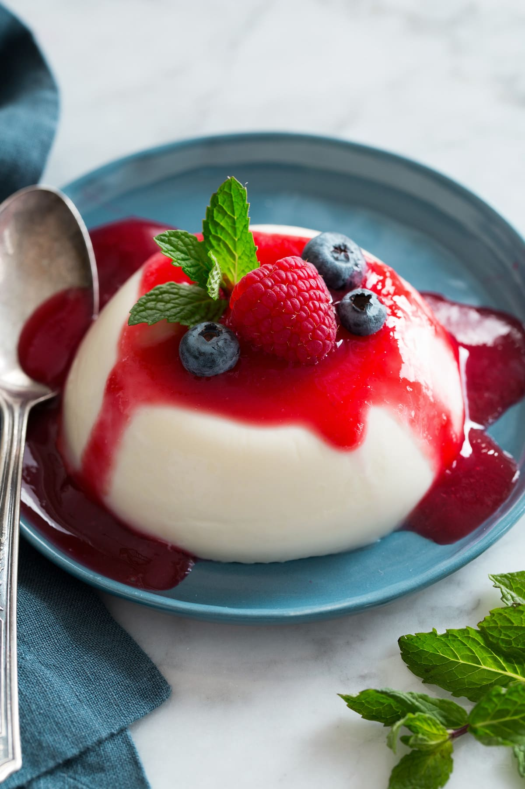

Panna Cotta

Description
Panna Cotta is he perfect light sweet for a
chilled summer gathering.
Try making this classic Italian dessert with delicate vanilla and
a fresh strawberry topping.
Ingredients
- 2 ½ sheets gelatine
- 150ml milk
- 400ml double cream
- 60g caster sugar
- 1 vanilla pod
- fresh strawberries
- strawberry compote
Preparation
- Add the sheets of gelatine to a bowl of cold water and soak for 5 mins.
- Pour the milk and cream into a saucepan with the sugar and vanilla seeds (to scrape the seeds out of the
pod, use the back of a knife). Stir to combine and bring to a simmer, then remove from the heat. Take the
gelatine out of the cold water and squeeze out the excess, then add to the milk mixture. Stir until
completely dissolved. Tip into four ramekins and place in the fridge to set for at least a couple of hours.
- To serve, turn each ramekin upside-down onto a serving plate. If the panna cotta won't drop out, carefully
dip the ramekin in a bowl of warm water to loosen it. Serve with a drizzle of strawberry compote and sliced
fresh strawberries.
- Enjoy!